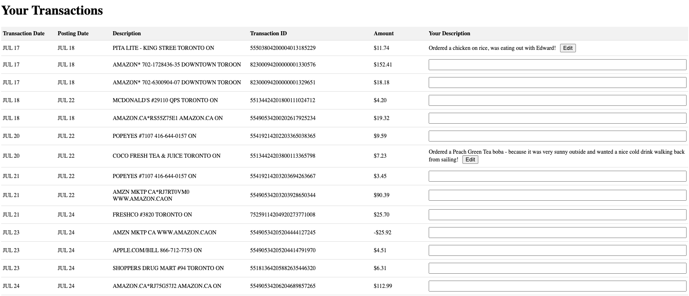
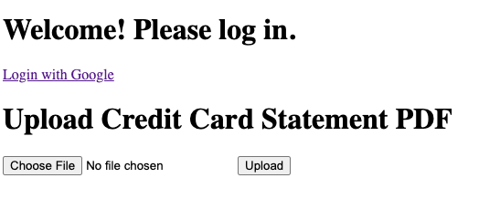
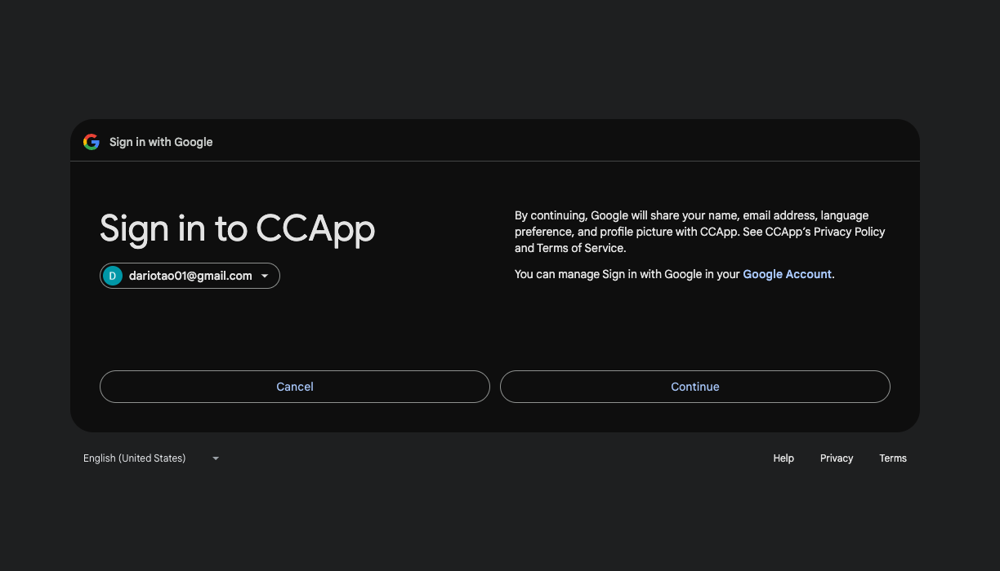
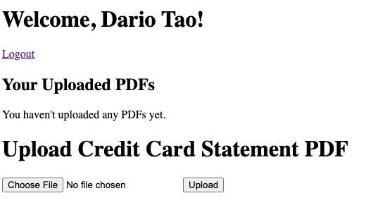

Your Finance Sorted
Did you ever want to have digital post-its for your credit card transactions? Not only does this foster a
great relationship with your credit card for personal finance, but it also serves as a mini journal— helping
you associate great memories to your transactions!
For this project, I developed a full stack web application using Node.js and Express.js. I implemented
server side-rendering with EJS templating engine. I also created RESTful API endpoints for data
manipulation. For the database management, I designed and implemented a MySQL database schema, and utilized
SQL queries for CRUD operations. Google OAuth was used for user authentication and session management.
Regarding the PDF processing, I developed a unique solution to parse and extract data from PDF files.
In the images below, those are some snippets of my app which will be deployed into production soon for
public use!



